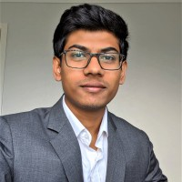

|  | Gowtham Ramesh
Research Engineer (Computer Vision and
Machine Learning) |
Research Engineer at 4DMedicalSept 2020 to Present |
|
|
|
|
Product Developement Engineer at EMC TechnologiesJan 2020 to March 2020 | |
|
|
During my Masters' was involved in several projects and some
that are close to me and lead to where I am at now are;
1. Detecting faults in railway track
2. Smart cane for visually impaired people
3. Smart computer vision board to draw on computer screen
| Python | 👌👌👌👌👌 | Photography | 👌👌👌 |
| C++ | 👌👌👌👌 | JavaScript | 👌👌 |
| Bash | 👌👌👌👌👌 | Web Development | 👌👌👌 |